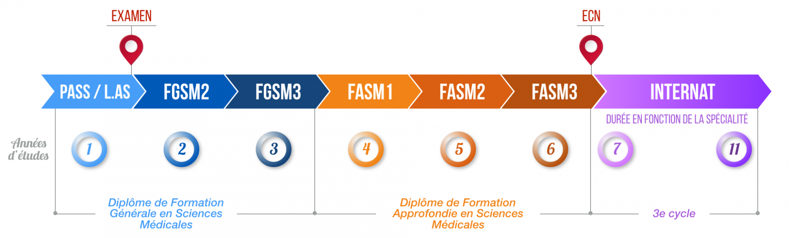
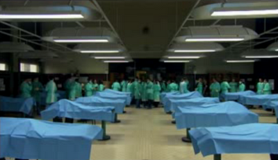
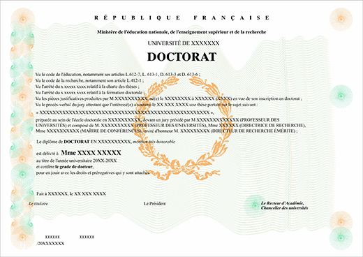

La première année, c'est le P.A.S.S ou le L.A.S selon le cursus choisi. A la fin de cette première année il y a un concours qui permet de rentrer en P2.
Vous avez validé votre PASS avec vos 60 ECTS (avec ou sans compensation et sans note éliminatoire), vous pouvez, a priori, intégrer les études de santé. Mais la sélection reste importante. Il faut donc rester parmi les meilleurs pour avoir ses chances d'accéder en deuxième année.
Les études de médecine se poursuivent ensuite par la deuxième et la troisième année, là où commence les dissections de cadavres, les stages dans les structures hospitalières et autres.
Ensuite, se passe l'externat qui est une période de 3 ans
où le temps est partagé entre la fac et l'hôpital.
On y apprend la sémiologie, le diagnostic, c'est-à-dire, apprendre à réagir par rapport à des
symptômes donnés sur un patient.
À la fin de ces trois années, il y a les ECNI Examens Classants Nationaux Informatisés, qui sont un grand concours pour intégrer la spécialité de notre choix.
Ensuite, c'est l'internat, pas celui du lycée mais celui de médecine qui se passe uniquement à l'hôpital il consiste en :
Elle correspond à un travail d'engagement personnel scientifique et symbolique, important dans la vie de tout étudiant en médecine. Contrairement à la thèse de doctorat de 3e cycle, la thèse d'exercice ne s'inscrit pas dans le parcours universitaire LMD (Licence-Master-Doctorat).
Et il obtient ce beau diplôme
